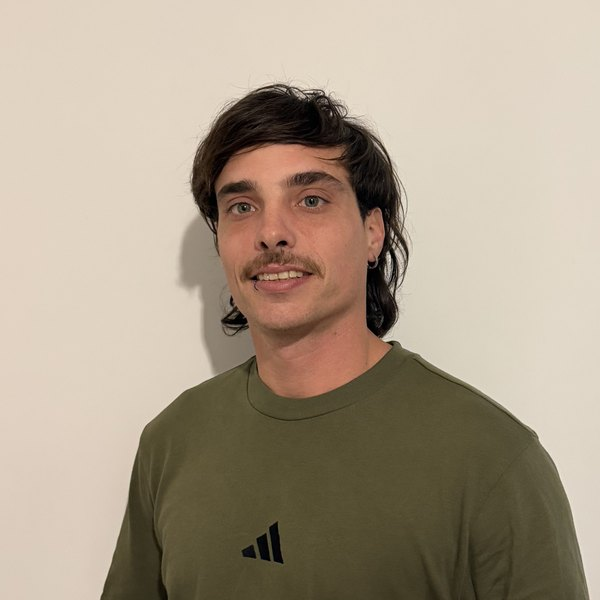

Nico Valentini
Senior iOS Engineer
Native iOS apps since 2016, built from Argentina, Italy, Denmark and Australia.
About
I’m an iOS engineer born in Río Colorado and based in La Plata, Argentina, where I earned my Computer Science degree at UNLP. For six years I lived and worked in Italy, Denmark and Australia, writing Swift for teams on three continents.
I like codebases that are easy to change: clear architecture, real tests, modern Swift. Now I’m back in Argentina, working remotely.
Leer en español
Soy ingeniero iOS. Nací en Río Colorado y vivo en La Plata, donde me recibí de Licenciado en Informática en la UNLP. Durante seis años viví y trabajé en Italia, Dinamarca y Australia, escribiendo Swift para equipos de tres continentes.
Me gustan los proyectos fáciles de cambiar: arquitectura clara, tests de verdad, Swift moderno. Hoy estoy de vuelta en Argentina, trabajando remoto.
Experience
-
2016–2021
Despegar.com
Buenos Aires, Argentina
iOS for one of Latin America’s leading travel platforms.
-
2021–2022
OverApp
Cagliari, Italy
FREE TO X, a mobility app for Italian highways.
-
2022–2023
Safelii
Copenhagen, Denmark
iOS client talking to connected IoT devices.
-
2023–now
Veloce Engineering
Remote from Argentina and Australia
Senior iOS engineer and architecture consultant for teams in Australia, the US and Europe.
Work with me
-
Remote iOS roles
Senior or lead positions, full time.
-
Architecture and modernization
Moving UIKit and Objective‑C code to SwiftUI, with tests that make the change safe.
-
Brand collaborations
Only products I use myself.
iOS stack
- Languages
- Swift, Objective‑C
- UI
- SwiftUI, UIKit, Auto Layout
- Concurrency
- async/await, Actors, Combine, GCD
- Architecture
- Clean Architecture, MVVM, modular, dependency injection, protocol‑oriented
- Data
- SwiftData, Core Data, REST APIs
- Testing
- Swift Testing, XCTest, UI tests
- Tooling
- Xcode Cloud, GitHub Actions, Fastlane, Instruments